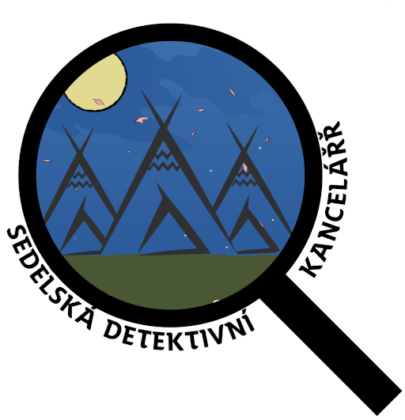
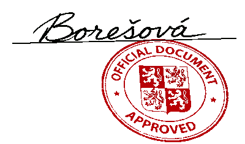

Denní rozvrh |
|
| 7:30 | Budíček |
| 7:45 | Rozcvička |
| 8:00 | Snídaně |
| 8:45 | Zahřívání mozkových závitů |
| První služba | |
| 9:00 | První společná hra |
| 10:00 | Dopolední sváča |
| 10:15 | Druhá společná hra |
| 12:00 | Oběd |
| 13:00 | Polední klid |
| Druhá služba | |
| 15:00 | Odpolední sváča |
| 15:30 | Odpolední společná hra |
| 18:00 | Večeře |
| 19:00 | Večerní klid |
| Třetí služba | |
| 20:45 | Večerní čtení |
| 21:00 | Večerka |
